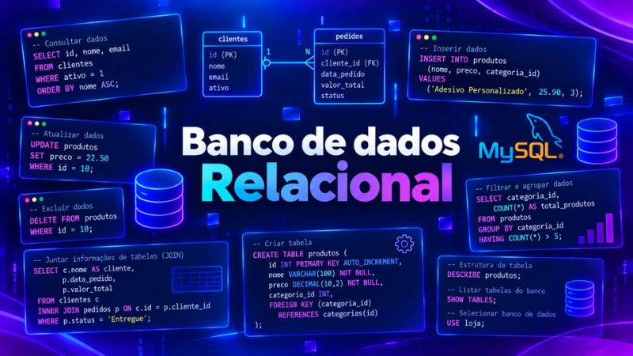

Formação educacional
Engenharia de Software / UNINTER
Período: 2026 - 2030
Futura Engenheira de Software | Em formação pela UNINTER
Estudante de Engenharia de Software na UNINTER desde 2026, com previsão de conclusão de curso até 2030. Confira meus projetos publicados no GitHub!
Engenharia de Software / UNINTER
Período: 2026 - 2030
Alguns trabalhos que realizei até aqui:
Este repositório reúne quatro exercícios desenvolvidos em Python, abordando conceitos fundamentais de programação, como:
if, elif, else)while)try/except)
Projeto acadêmico de Banco de Dados desenvolvido para o curso de Engenharia de Software, cobrindo modelagem conceitual (MER) e implementação de um banco relacional em MySQL para o controle de ordens de serviço de uma empresa.
Ver projeto